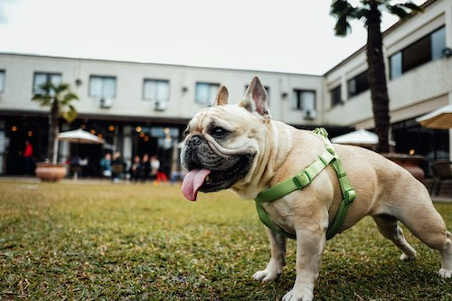

Dogs are better than cats because I have 2 dogs, and from experience, I've had a better connection with dogs. Dogs are so kind, sweet, and a great emotional companion. Cats are great too, but I prefer dogs because my two french bulldogs have been the greatest gift I could ask for.
